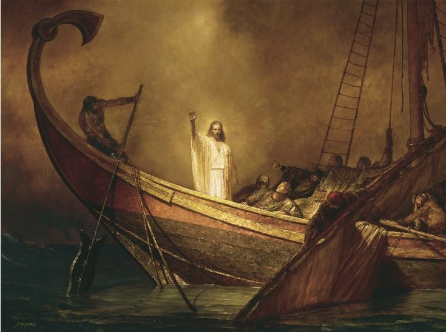
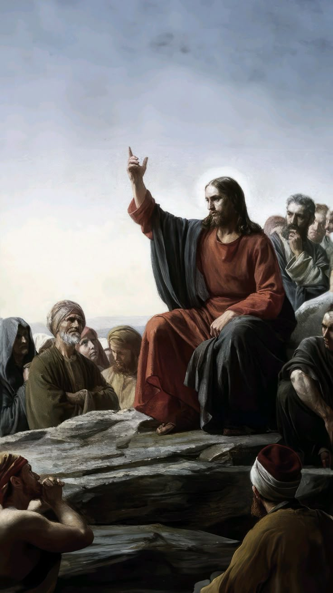

A Vida de Jesus Cristo

Jesus Cristo é a figura central do Cristianismo, reconhecido por milhões como o Filho de Deus e o Salvador da humanidade. Sua vida, ensinamentos, morte e ressurreição são narrados nos quatro Evangelhos do Novo Testamento (Mateus, Marcos, Lucas e João) e continuam a inspirar fé e devoção há mais de dois mil anos.
Nascimento e Infância
Jesus nasceu em Belém, na Judeia, durante o governo do rei Herodes, por volta do ano 6 a.C. a 4 a.C. (o cálculo do calendário cristão tem uma pequena divergência histórica).
Sua mãe, Maria, era uma jovem virgem que concebeu Jesus por obra do Espírito Santo, conforme anunciado pelo anjo Gabriel (Lucas 1, 26-38). Seu pai adotivo, José, era um carpinteiro da linhagem do rei Davi.
O nascimento de Jesus foi humilde, em uma manjedoura, e foi celebrado por pastores e, mais tarde, por magos do Oriente que seguiram uma estrela para adorá-Lo (Mateus 2, 1-12). Pouco depois, José e Maria fugiram para o Egito para escapar da perseguição de Herodes, que ordenou o massacre dos meninos de Belém.
Após a morte de Herodes, a família retornou e se estabeleceu em Nazaré, na Galileia, onde Jesus cresceu. Pouco se sabe sobre Sua infância, exceto um episódio registrado em Lucas 2, 41-52, quando, aos 12 anos, Jesus discutia com os doutores no Templo de Jerusalém, demonstrando sabedoria divina.
Ministério Público
Aos cerca de 30 anos, Jesus foi batizado por João Batista no rio Jordão, momento em que o Espírito Santo desceu sobre Ele, e uma voz do céu declarou: "Este é o meu Filho amado, em quem me comprazo" (Mateus 3, 13-17). Em seguida, Jesus jejuou por 40 dias no deserto, onde foi tentado por Satanás, mas resistiu firmemente (Mateus 4, 1-11).
Seu ministério durou aproximadamente três anos, durante os quais pregou o Reino de Deus, realizou milagres (curas, exorcismos, multiplicação de pães, ressurreições) e ensinou por meio de parábolas. Seus principais ensinamentos incluíam:
- O amor a Deus e ao próximo (Mateus 22, 37-39);
- O perdão ("Perdoai setenta vezes sete" – Mateus 18, 22);
- A humildade e o serviço ("Quem quiser ser o maior, seja servo de todos" – Marcos 10, 43-45);
- A vida eterna ("Eu sou o caminho, a verdade e a vida" – João 14, 6).
Jesus escolheu doze apóstolos para acompanhá-lo e dar continuidade à sua missão. Entre eles estavam Pedro, Tiago, João e Judas Iscariotes, que mais tarde O trairia.
Paixão, Morte e Ressurreição
A oposição a Jesus cresceu entre os líderes religiosos judaicos, que O viam como uma ameaça. Durante a celebração da Páscoa judaica, Jesus foi traído por Judas e preso no Getsêmani. Ele foi julgado pelo Sinédrio (tribunal religioso judaico) e entregue ao governador romano Pôncio Pilatos, que, pressionado, condenou-O à crucificação.
Jesus foi flagelado, coroado com espinhos e carregou Sua cruz até o Gólgota (Calvário), onde foi crucificado entre dois ladrões. Antes de morrer, perdoou Seus algozes (Lucas 23, 34) e entregou Seu espírito a Deus. Seu corpo foi sepultado no túmulo de José de Arimateia, mas, no terceiro dia, Ele ressuscitou, cumprindo as profecias (Mateus 28, 1-10).
Após Sua ressurreição, Jesus apareceu a Maria Madalena, aos discípulos e a mais de 500 pessoas (1 Coríntios 15, 3-8), confirmando Sua vitória sobre a morte. Quarenta dias depois, ascendeu aos céus na presença dos apóstolos (Atos 1, 9-11), prometendo enviar o Espírito Santo (Pentecostes) e voltar um dia para julgar os vivos e os mortos.
Legado de Jesus
A vida de Jesus transformou a história da humanidade. Seus ensinamentos de amor, perdão e salvação fundamentaram o Cristianismo, que se espalhou pelo mundo.
Para os cristãos, Ele é o Messias prometido no Antigo Testamento, o Cordeiro de Deus que tira o pecado do mundo (João 1, 29). Sua mensagem continua a guiar bilhões de pessoas, oferecendo esperança e vida eterna.
"Porque Deus amou o mundo de tal maneira que deu o seu Filho unigênito, para que todo aquele que nele crê não pereça, mas tenha a vida eterna." (João 3, 16)
O Ensino de Jesus

Os Ensinamentos de Jesus Cristo
Os ensinamentos de Jesus Cristo, registrados nos Evangelhos do Novo Testamento, são a base da fé cristã e continuam a influenciar milhões de pessoas ao redor do mundo.
Sua mensagem central era o amor a Deus e ao próximo, a justiça, a misericórdia e a vinda do Reino dos Céus. Jesus ensinou por meio de sermões, parábolas e ações, revelando a vontade de Deus e o caminho para a salvação.
O Amor a Deus e ao Próximo
Jesus resumiu toda a Lei e os Profetas em dois grandes mandamentos:
"Ame o Senhor, seu Deus, de todo o seu coração, de toda a sua alma e de todo o seu entendimento. Este é o primeiro e maior mandamento. E o segundo é semelhante a ele: Ame o seu próximo como a si mesmo." (Mateus 22, 37-39)
Ele ensinou que o verdadeiro amor a Deus se manifesta na obediência e na devoção sincera, enquanto o amor ao próximo deve ser prático e incondicional, como exemplificado na Parábola do Bom Samaritano (Lucas 10, 25-37), que mostra que a compaixão deve ultrapassar barreiras religiosas e culturais.
O Perdão e a Misericórdia
Jesus enfatizou a importância do perdão, ensinando que devemos perdoar assim como Deus nos perdoa:
"Perdoem uns aos outros, se alguém tiver queixa contra outro. Assim como o Senhor lhes perdoou, perdoem também vocês." (Colossenses 3, 13)
Na Oração do Pai Nosso, Ele incluiu: "Perdoa as nossas dívidas, assim como perdoamos aos nossos devedores" (Mateus 6, 12). Além disso, na cruz, Ele demonstrou perdão ao dizer: "Pai, perdoa-lhes, pois não sabem o que fazem" (Lucas 23, 34).
A Humildade e o Serviço
Jesus ensinou que a verdadeira grandeza está em servir, não em ser servido:
"Quem quiser ser o maior entre vocês deverá ser servo, e quem quiser ser o primeiro deverá ser escravo de todos." (Marcos 10, 43-44)
Ele exemplificou isso lavando os pés dos discípulos (João 13, 1-17) e ensinando que "o Filho do Homem não veio para ser servido, mas para servir e dar a sua vida em resgate por muitos" (Mateus 20, 28).
A Confiança em Deus e a Vida sem Ansiedade
Jesus encorajou Seus seguidores a confiarem na providência divina:
"Não se preocupem com sua própria vida, quanto ao que comer ou beber; nem com seu próprio corpo, quanto ao que vestir. [...] Olhem para as aves do céu: não semeiam nem colhem nem armazenam em celeiros; contudo, o Pai celestial as alimenta. Não têm vocês muito mais valor do que elas?" (Mateus 6, 25-26)
Ele ensinou que devemos buscar "em primeiro lugar o Reino de Deus e a sua justiça" (Mateus 6, 33), e tudo o mais nos será acrescentado.
A Justiça e a Compaixão pelos Pobres e Oprimidos
Jesus demonstrou especial cuidado pelos marginalizados, incluindo pobres, doentes e pecadores. Ele disse:
"Bem-aventurados os pobres de espírito, pois deles é o Reino dos Céus. Bem-aventurados os que choram, pois serão consolados." (Mateus 5, 3-4)
Ele criticou os religiosos hipócritas que negligenciam a justiça e a misericórdia (Mateus 23, 23) e ensinou que no Juízo Final seremos julgados por nosso amor prático:
"Tive fome, e vocês me deram de comer; tive sede, e vocês me deram de beber; fui estrangeiro, e vocês me acolheram." (Mateus 25, 35)
A Vida Eterna e a Fé em Jesus
Jesus declarou ser o único caminho para Deus:
"Eu sou o caminho, a verdade e a vida. Ninguém vem ao Pai, a não ser por mim." (João 14, 6)
Ele prometeu vida eterna a quem crê:
"Porque Deus amou o mundo de tal maneira que deu o seu Filho unigênito, para que todo o que nele crer não pereça, mas tenha a vida eterna." (João 3, 16)
A Vigilância e a Preparação para o Reino de Deus
Jesus alertou sobre a necessidade de estar espiritualmente preparado:
"Vigiem, porque vocês não sabem o dia nem a hora em que o Filho do Homem virá." (Mateus 25, 13)
Ele contou parábolas como a das Dez Virgens (Mateus 25, 1-13) e dos Talentos (Mateus 25, 14-30) para ensinar sobre responsabilidade e fidelidade.
Conclusão
Os ensinamentos de Jesus revolucionaram o mundo, trazendo uma mensagem de amor, perdão, justiça e esperança. Seus princípios continuam a guiar vidas e transformar sociedades, chamando todos a viverem em comunhão com Deus e em amor ao próximo. Como Ele mesmo disse:
"Assim brilhe a luz de vocês diante dos homens, para que vejam as suas boas obras e glorifiquem ao Pai de vocês, que está nos céus." (Mateus 5, 16)
A essência de Seu ensino é amar como Ele amou (João 13, 34) e seguir Seus passos com fé e obediência.
Os Milagres de Jesus

Os milagres de Jesus demonstravam seu poder sobre a natureza, as doenças e até a morte, confirmando sua divindade e a chegada do Reino de Deus.
Transformação da água em vinho
Primeiro milagre nas bodas de Caná (João 2, 1-11)
Cura do paralítico
"Levanta-te, toma tua cama e anda" (Marcos 2, 1-12)
Multiplicação dos pães
Alimentou 5000 com cinco pães e dois peixes (Mateus 14, 13-21)
O Mar se Ajoelha ao Seu Dono
"Cala-te, aquieta-te!" (Marcos 4, 35-41)
Ressurreição de Lázaro
"Lázaro, vem para fora!" (João 11, 1-44)
O Cego que Viu a Glória de Deus
"Lavou-se e voltou vendo!" (João 9, 1-12)
O Homem que Aterrorizava uma Cidade
"Legião é meu nome!" (Marcos 5, 1-20)
O Soldado que Parou Jesus
"Nem em Israel achei fé como esta!" (Mateus 8, 5-13)
O Túmulo Vazio: O Evento que Dividiu a História
"Não está aqui; ressuscitou!" (Mateus 28, 6)
Pisando o Caos: O Mar que se Tornou Tapete
"Não temais, sou Eu!" (Mateus 14, 22-33)
Véu Rasgado: Jesus no Esplendor da Divindade
"Seu rosto resplandeceu como o sol" (Mateus 17, 1-13)
Nuvem de Glória: A Partida que Era Chegada
"Elevou-Se à vista deles" (Atos 1, 9-11)
A Profunda Genealogia de Jesus: O Plano Divino Revelado

A genealogia de Jesus Cristo não é uma mera lista de nomes, mas um mapa profético que revela o plano de redenção de Deus ao longo de 2.000 anos de história bíblica.
1. As Duas Genealogias: Um Quebra-Cabeça Divino
Mateus 1, 1-17
- Foca em José (pai adotivo)
- Linhagem real (via Salomão)
- Organizada em 3x14 gerações
- Inclui 4 mulheres inesperadas
Lucas 3, 23-38
- Foca em Maria (mãe biológica)
- Linhagem natural (via Natã)
- Remonta até Adão
- Mais extensa e detalhada
"Livro da genealogia de Jesus Cristo, filho de Davi, filho de Abraão." (Mateus 1, 1)
Por que duas genealogias? Mateus escreveu para judeus (ênfase no cumprimento messiânico), Lucas para gentios (universalidade da salvação).
2. O Mistério de Jeconias e a Maldição Quebrada
Jeremias 22, 24-30 profetizou uma maldição sobre o rei Jeconias (também chamado Joaquim):
"Assim diz o Senhor: 'Registrem este homem como sem filhos... nenhum de seus descendentes prosperará, nem se assentará no trono de Davi'" (Jeremias 22, 30)
Como Deus Resolveu Isso?
José era descendente de Jeconias (Mateus 1, 11-12) - Se Jesus fosse seu filho biológico, estaria sob maldição
Maria era descendente de Natã (outro filho de Davi) - Sem a maldição (Lucas 3, 31)
Solução Divina: Nascimento virginal! Jesus herdou:
- ✅ Direito legal ao trono por José
- ❌ Sem maldição por não ser filho biológico
3. As 4 Mulheres na Genealogia: A Graça em Ação
Tamar (Gênesis 38)
Disfarçou-se de prostituta para engravidar de Judá
Lição: Deus redime situações moralmente complexas
Raabe (Josué 2)
Prostituta de Jericó que protegeu os espias
Lição: A fé supera o passado (Hb 11, 31)
Rute (Livro de Rute)
Moabita que se tornou bisavó de Davi
Lição: Deus inclui os gentios
Bate-Seba (2 Samuel 11)
Envolvida em adultério com Davi
Lição: O perdão transforma histórias
"Deus escolheu as coisas fracas deste mundo para envergonhar as fortes" (1 Coríntios 1, 27)
4. O Segredo do Número 14: O Código Messiânico
Mateus organiza a genealogia em 3 grupos de 14 gerações (Mateus 1, 17):
1. Abraão → Davi
Cumprimento da Aliança Abraâmica (Gn 12, 1-3)
2. Davi → Exílio
Cumprimento da Aliança Davídica (2 Sm 7, 12-16)
3. Exílio → Jesus
Restauração Messiânica prometida
Por Que 14?
Valor numérico de "Davi" (דוד) em hebraico:
ד (Dalet) = 4
ו (Vav) = 6
ד (Dalet) = 4
4 + 6 + 4 = 14
Por Que Essa Genealogia é Tão Importante?
Prova que Jesus é o Messias - Cumpre as profecias da linhagem real
Mostra a graça de Deus - Inclui pecadores e estrangeiros
Salvação para todos - Judeus e gentios
"Toda Escritura é inspirada por Deus e útil para o ensino" (2 Timóteo 3, 16)
As Parábolas de Jesus: Ensinamentos que Transformam Corações

Jesus usou 46 parábolas registradas nos Evangelhos, representando 35% de Seus ensinos. Estas histórias aparentemente simples eram armas poderosas para revolucionar mentalidades e revelar os mistérios do Reino de Deus.
"Nada lhes falava sem usar alguma parábola" (Mateus 13, 34)
"Porque vendo, eles não veem e, ouvindo, não ouvem nem entendem."
As Parábolas de Jesus: Histórias que Revelam o Coração de Deus
As parábolas de Jesus constituem um dos aspectos mais fascinantes e profundos de Seu ministério terreno. Mais do que simples histórias ilustrativas, essas narrativas eram armas espirituais cuidadosamente elaboradas para romper barreiras culturais, desafiar estruturas religiosas petrificadas e revelar os mistérios do Reino dos Céus de maneira acessível, porém transformadora.
O Poder Pedagógico das Parábolas
Jesus empregava as parábolas com maestria pedagógica incomparável, adaptando-Se ao contexto agrícola e social da Palestina do primeiro século.
Os Quatro Tipos de Solo na Parábola do Semeador (Mateus 13, 3-9) e os Tipos de Fé Correspondentes
A Parábola do Semeador revela quatro respostas diferentes à Palavra de Deus, representadas por tipos de solo. Cada um simboliza um tipo de fé (ou falta dela) no coração humano.
1. Solo à Beira do Caminho – Fé Superficial
Características do Solo:
- Terra dura, compactada pelo tráfego de pessoas.
- A semente não penetra e é rapidamente devorada pelos pássaros.
Tipo de Fé (ou Falta dela):
- Ouvinte indiferente: A mensagem não é compreendida nem absorvida.
- Coração endurecido pelo secularismo, descrença ou influências malignas (o "inimigo" rouba a Palavra).
- Exemplo moderno: Pessoas que ouvem o Evangelho, mas logo se distraem com o mundo.
"Quando alguém ouve a mensagem do Reino e não a entende, o Maligno vem e arranca o que foi semeado em seu coração." (Mateus 13, 19)
2. Solo Pedregoso – Fé Emocional
Características do Solo:
- Camada superficial de terra sobre rocha.
- A planta brota rápido, mas não cria raízes profundas.
- Morre quando vem o sol forte.
Tipo de Fé:
- Conversão emocional, mas sem firmeza.
- Alegria inicial, mas desiste diante de perseguições ou dificuldades.
- Exemplo moderno: Pessoas que se entusiasmam em cultos ou retiros, mas abandonam a fé quando enfrentam críticas ou problemas.
"Não tem raiz em si mesmo, mas é de pouca duração. Quando surge alguma tribulação ou perseguição por causa da Palavra, logo a abandona." (Mateus 13, 21)
3. Solo entre Espinhos – Fé Abafada
Características do Solo:
- Terra boa, mas infestada de ervas daninhas.
- A planta cresce, mas é sufocada pelos espinhos.
Tipo de Fé:
- Coração dividido entre Deus e as preocupações mundanas.
- Preocupações materiais (riqueza, prazeres, ansiedades) sufocam o crescimento espiritual.
- Exemplo moderno: Cristãos que priorizam trabalho, status ou entretenimento em vez de uma vida de oração e serviço.
"Os espinhos são os cuidados desta vida e a sedução das riquezas, que sufocam a Palavra, tornando-a infrutífera." (Mateus 13, 22)
4. Solo Bom – Fé Genuína e Frutífera
Características do Solo:
- Terra fértil, arada e livre de impedimentos.
- A semente cresce, frutifica e multiplica (30x, 60x, 100x).
Tipo de Fé:
- Coração receptivo que ouve, compreende e pratica a Palavra.
- Perseverança mesmo em tempos difíceis.
- Resultado: Uma vida que impacta outros (frutos de amor, santidade, evangelismo).
- Exemplo moderno: Discípulos que crescem na fé, servem na igreja e testemunham de Cristo.
"Mas o que foi semeado em boa terra é o que ouve a Palavra e a compreende; esse dá fruto e produz a cem, a sessenta e a trinta por um." (Mateus 13, 23)
Parábolas que Subvertiam Expectativas
O Bom Samaritano (Lucas 10, 25-37)
O Mestre demonstrava especial habilidade em subverter expectativas através de Seus enredos:
- Escolheu deliberadamente um samaritano (grupo desprezado) como herói
- Retratou líderes religiosos como falhos em seu dever moral
- Redefiniu radicalmente o conceito de "próximo"
O impacto dessa narrativa foi tão contundente que, dois milênios depois, o termo "bom samaritano" permanece no vocabulário universal.
O Filho Pródigo (Lucas 15, 11-32)
Entre as parábolas mais comoventes:
- Retrato vívido do amor paternal de Deus
- O pai correndo ao encontro do filho era revolucionário para a cultura oriental
- Símbolos poderosos:
- Sandália (liberdade)
- Túnica nova (restauração)
- Anel (autoridade)
- O irmão mais velho representava o legalismo religioso
Parábolas sobre a Natureza do Reino
O Grão de Mostarda (Mateus 13, 31-32)
- Ilustrava crescimento do insignificante ao majestoso
- Contraste proposital com expectativas culturais
- Mensagem de esperança para os discípulos
O Fermento (Mateus 13, 33)
- Revelava o caráter penetrante do Reino
- Transformação invisível inicial com resultados visíveis
- Impacto completo na sociedade
Parábolas Escatológicas
As Dez Virgens (Mateus 25, 1-13)
- Advertência sobre vigilância espiritual
- Preparação constante vs. entusiasmo momentâneo
- O azeite como símbolo do Espírito Santo
Os Talentos (Mateus 25, 14-30)
- Chamado à fidelidade com os dons recebidos
- Engajamento criativo na expectativa do retorno de Cristo
- Condenação da passividade espiritual
O Poder Duradouro das Parábolas
O poder duradouro das parábolas reside em sua capacidade de falar simultaneamente a diferentes níveis:
- Ouvinte casual: Histórias memoráveis do cotidiano
- Discípulos: Princípios profundos do Reino
- Opositores: Espelhos que revelam hipocrisia
Relevância Contemporânea
Ao estudarmos essas narrativas hoje, descobrimos que elas mantêm extraordinária relevância:
- A do Fariseu e o Publicano desafia nossa justiça própria
- A do Bom Pastor oferece consolo inigualável
- Cada parábola revela facetas da verdade divina
Como os discípulos no caminho de Emaús, nosso coração pode arder ao reconhecer Jesus em todo Seu esplendor pedagógico e amor redentor.
O Que Jesus Disse Sobre o Fim do Mundo?

O Discurso Profético no Monte das Oliveiras
O Discurso Profético foi uma das pregações mais importantes de Jesus sobre os eventos futuros. Ele aconteceu no Monte das Oliveiras, quando os discípulos perguntaram sobre os sinais da sua volta e do fim dos tempos. Esse discurso está registrado em:
- Mateus 24-25
- Marcos 13
- Lucas 21
Poucos dias antes de morrer, Jesus deu Seu ensino mais detalhado sobre o futuro. Os discípulos perguntaram:
"Dize-nos... que sinal haverá da tua vinda e do fim dos tempos?" (Mateus 24, 3)
8 Sinais que Precedem a Volta de Cristo
1. Falsos Cristos e Falsos Profetas
"Muitos virão em meu nome, dizendo: 'Eu sou o Cristo'"
Exemplo atual: Seitas que afirmam ser a reencarnação de Jesus.
2. Guerras e Rumores de Guerras
"E ouvireis falar de guerras e de rumores de guerras; olhai, não vos assusteis, porque é necessário que isso aconteça, mas ainda não é o fim." (Mateus 24, 6)
Dado: Século XX teve 2 guerras mundiais; hoje há 32 conflitos ativos (Uppsala Conflict Data Program).
3. Fomes, Terremotos e Epidemias
"Haverá fomes e terremotos em vários lugares." (Mateus 24, 7) "Haverá também grandes terremotos, fomes e pestes em vários lugares..." (Lucas 21, 11)
Dado: 690 milhões de pessoas passam fome no mundo (FAO).2020 teve 1.500 terremotos significativos (USGS).
4. Sinais no Céu e na Terra
"Haverá sinais no sol, na lua e nas estrelas; na terra, angústia entre as nações em perplexidade pelo bramido do mar e das ondas." (Lucas 21, 25)
Dado: Eventos cósmicos e catástrofes naturais marcarão os últimos tempos.
5. Perseguição aos Cristãos (v.9)
"Então vos hão de entregar para serdes atormentados, e matar-vos-ão; e sereis odiados de todas as nações por causa do meu nome." (Mateus 24, 9)
Dado: 340 milhões de cristãos enfrentam perseguição (Open Doors).
6. O Evangelho Será Pregado em Todo o Mundo
"E este evangelho do Reino será pregado em todo o mundo, em testemunho a todas as nações. Então virá o fim." (Mateus 24, 14)
Dado: 7.000 idiomas têm acesso à Bíblia (Wycliffe Global Alliance).
7. Amor Frio (v.12)
"Por se multiplicar a iniquidade, o amor de muitos esfriará"
Dado: Aumento de crimes e violência em várias sociedades.
8. O Surgimento da Grande Tribulação
"Porque haverá então uma grande tribulação, como nunca houve desde o princípio do mundo até agora, nem jamais haverá." (Mateus 24, 21)
Dado: Será um período de sofrimento sem precedentes na história humana.
Conclusão:
Jesus alertou que ninguém sabe o dia nem a hora de sua volta (Mateus 24, 36), mas pediu que seus seguidores ficassem atentos aos sinais e permanecessem firmes na fé.
A Grande Tribulação
A Grande Tribulação é um período de sofrimento extremo descrito por Jesus no Sermão Profético, principalmente em Mateus 24, 21-22:
"Porque haverá então uma grande tribulação, como nunca houve desde o princípio do mundo até agora, nem jamais haverá. E, se aqueles dias não fossem abreviados, nenhuma carne se salvaria; mas por causa dos escolhidos, serão abreviados aqueles dias." (Mateus 24, 21-22)
- Será o pior período da história humana
- Será abreviado por causa dos escolhidos
- Haverá perseguição severa aos cristãos
- Enganos espirituais aumentarão
- Sinais cósmicos e desastres
Principais Características da Grande Tribulação
Jesus afirmou que será um tempo de angústia sem precedentes. Nenhum outro evento na história poderá ser comparado.
Se esse tempo não fosse encurtado por Deus, toda a humanidade poderia ser destruída.
"Então vos hão de entregar para serdes atormentados e matar-vos-ão; e sereis odiados de todas as nações por causa do meu nome." (Mateus 24, 9)
"Surgirão falsos cristos e falsos profetas, e farão tão grandes sinais e prodígios que, se possível, enganariam até os escolhidos." (Mateus 24, 24)
"Logo depois da aflição daqueles dias, o sol escurecerá, a lua não dará a sua luz, as estrelas cairão do céu e os poderes dos céus serão abalados." (Mateus 24, 29)
O que significa a Grande Tribulação?
A Grande Tribulação é interpretada de diferentes formas dentro do cristianismo, mas geralmente significa:
- Juízo de Deus – Um período de julgamento sobre o mundo por causa do pecado.
- Provação final para os fiéis – Os cristãos enfrentarão grande perseguição e deverão manter sua fé.
- Prelúdio da volta de Cristo – Esse tempo marcará a fase final da história humana antes da Segunda Vinda de Jesus.
Em Mateus 24, 30, Jesus afirma que depois desse período, ele aparecerá em glória:
"Então aparecerá no céu o sinal do Filho do Homem; e todas as tribos da terra se lamentarão, e verão o Filho do Homem vindo sobre as nuvens do céu, com poder e grande glória."
Como Devemos Viver?
Jesus nos deixou ensinamentos sobre como devemos viver enquanto aguardamos sua volta. Aqui estão alguns princípios fundamentais:
Vigiar e Estar Preparado
Buscar a Santidade
Amar a Deus e ao Próximo
Perseverar na Fé
Pregando o Evangelho
Ser Fiel nas Pequenas Coisas
Guardar Tesouros no Céu
"Vigiai, pois, porque não sabeis a que hora há de vir o vosso Senhor." (Mateus 24, 42)
Não sabemos o dia nem a hora da volta de Cristo, então devemos estar sempre preparados, vivendo uma vida reta diante de Deus.
"Sede santos, porque eu sou santo." (1 Pedro 1, 16)
Viver em santidade significa buscar obedecer a Deus, evitar o pecado e andar segundo os ensinamentos de Cristo.
"Amarás o Senhor, teu Deus, de todo o teu coração, de toda a tua alma e de todo o teu pensamento. Este é o primeiro e grande mandamento. E o segundo, semelhante a este, é: Amarás o teu próximo como a ti mesmo." (Mateus 22, 37-39)
Devemos viver com amor e compaixão, ajudando o próximo e refletindo o caráter de Cristo.
"Aquele que perseverar até o fim será salvo." (Mateus 24, 13)
As dificuldades virão, mas devemos permanecer firmes em Cristo, confiando em Deus em todas as circunstâncias.
"E este evangelho do Reino será pregado em todo o mundo, em testemunho a todas as nações. Então virá o fim." (Mateus 24, 14)
Fomos chamados para compartilhar a mensagem de salvação com os outros.
"Bem-aventurado aquele servo que o Senhor, quando vier, achar servindo assim." (Mateus 24, 46)
Devemos ser fiéis em nossas responsabilidades diárias, vivendo com integridade e justiça.
"Não ajunteis para vós tesouros na terra, onde a traça e a ferrugem os consomem e onde os ladrões minam e roubam. Mas ajuntai tesouros no céu." (Mateus 6, 19-20)
Em vez de focar apenas em riquezas materiais, devemos investir em boas obras e um relacionamento com Deus.
Conclusão
Viver corretamente significa estar preparado para a volta de Cristo, seguindo seus ensinamentos, amando a Deus e ao próximo, perseverando na fé e fazendo o bem. Assim, estaremos prontos para o dia do Senhor.